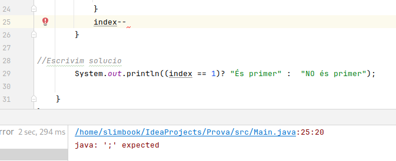
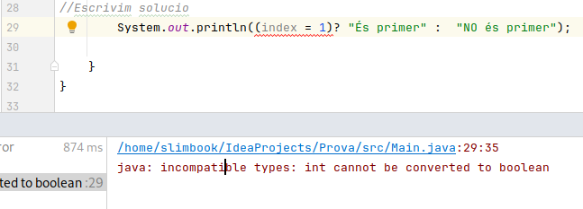
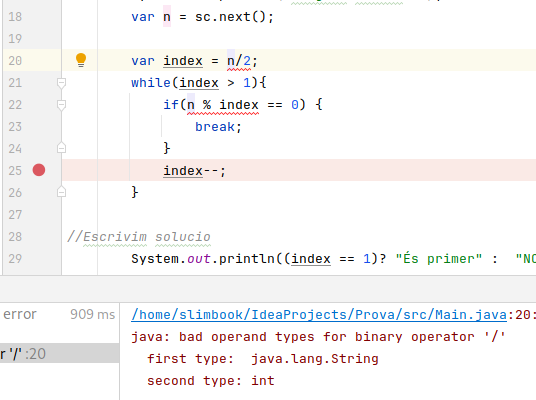
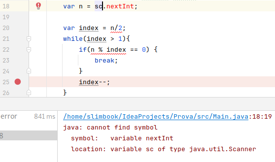
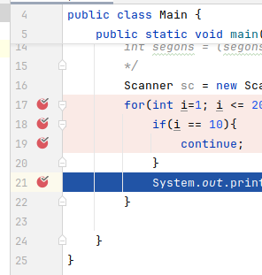
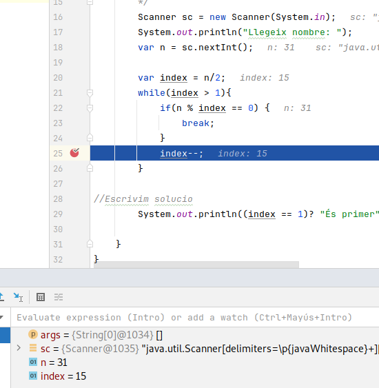

La depuració de codi ens ajudarà a corregir el nostre codi per tal que tingui el comportament que n’esperem. Normalment cal classificar dues problemàtiques diferents: existeixen error en la compilació, o no existeixen errors en la compilació però el resultat esperat no és el que hauria de ser.
Els errors venen perquè un cop compilem el codi, aquest té errors sintàtics i/o semàntics que no permeten crear el .class a partir del qual executem. Quan això passa veurem imprès per línia de comandes quin tipus d’error tinc i en quina línia és detectat. És necessari entendre molt bé els tipus d’error més comuns per tal de saber on està la solució al problema. Cal aprendre a llegir errors i a documentar-se sobre els errors, són molt variats i de moltes tipologies diferents, tot seguit, un recull dels més comuns al principi:
En aquest cas apreciem que la instrucció index– li falta “;” de finalització. En l’error ens indica la línia 25, i el caràcter 20 des de l’inici de la línia. 
El següent error ens indica que l’operador relacional de comparació d’iguals és el “==”, no el “=” com hem posat. En Java “=” és l’assignació d’una valor a una variable, mentre que “==” realitza la comparació entre dues variables del mateix tipus. Per això el que passa dins l’expressió index = 1 és que s’assigna el valor 1 a index i després no es troba un valor booleà necessari per avaluar la condició. 
L’error en aquest cas es deu a que a la variable var n se li assigna un String ja que la lectura prové de sc.next(); Per tant no és un enter com es demana alhora de realitzar la divisió a la següent instrucció. 
Aquest error es deu a que falta “()” a la funció sc.nextInt. Sense “()” no es detecta que és una funció de lectura d’enters de la classe Scanner com s’indica en l’error. 
En aquests casos és necessari aprendre a depurar bé el codi ja que necessitem entedre en quin punt de l’execució divergeix del que teníem planificat. Per tal de depurar el codi existeixen diferents tècniques.
Mitjançant aquesta tècnica es permet determinar tants punts com volguem en l’execució del codi. Quan s’arriba a aquests punts el programa es queda en un estat latent, i ens permet a nosaltres, avançar instrucció a instrucció, o bé avançar fins al següent breakpoint que tinguem definit. Per exemple, si tenim un bucle i posem un sol breakpoint en el bloc on s’itera, permetrà en cada iteració visualitzar el valor de les variables que es van modificant.
Per tal d’utilitzar aquesta tècnica cal que:


Les assercions en Java serveixen per comprovar que els blocs de codi que estem implementant estan donant els resultats esperats a partir d’una sèrie de tests que implementem. Existeixen llibreries molt complertes pel maneig d’assercions en Java: JUnit, Mockito, Selenium, etc.
No és objecte d’aquesta primera part configurar una d’aquestes llibreries, senzillament ensenyem com configurar en Intellij Idea l’habilitació d’assercions i comprovar com utilitzar-les.
Per fer-ho, cal que:
asserts no en veuríem el resultat.Ara sí ja podem escriure asserts en el nostre codi.
Els asserts ens són útils per comprovar els valors que prenen les nostres variables i llançar excepcions quan no compleixen amb els nostres requisits o valors esperats.
Per exemple, retornant a l’exemple de les notes que havíem fet durant l’estructura de selecció, aplicarem un assert quan la nota introduïda no estigui continguda entre 0 i 10.
Scanner sc = new Scanner(System.in);
var nota = sc.nextInt();
assert nota >= 0 && nota <= 10 : "La nota ha d'estar entre 0 i 10";
if (nota < 5) {
System.out.println("Suspès");
else if (nota < 6) {
System.out.println("Aprovat");
}
else if (nota < 8) {
System.out.println("Bé");
}
else if (nota < 9) {
System.out.println("Notable");
}
else{
System.out.println("Excel·lent");
}
Com s’observa, si la nota no està entre 0 i 10 el programa llançarà una excepció on s’indica que s’espera una nota entre 0 i 10.